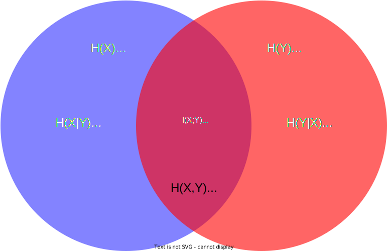

Information
Entropy (inside transformation)
- (Starmer, n.d.)
-
Entropy… basis for relative entropy (KL distance), Cross entropy, Mutual information, dimension reduction algorithms (t-SNE, UMAP), classification trees, channel capacity, etc.
heads tails probability 0.9 0.1 surprise 0.15 3.32 - Surprise of observing an event: In general it is the inverse of the probability $1/P(x)$. However, due to calculation $100%$ or $0%$ , the $log(1/P(x))$ is used. For two items $log_{2}$ is used.
- To caclulate the total surprise for a sequence of events (combined), just sum their individual surprises. It works due to log transofrmating multiplication to summation. Example: $heads, heads, tails = 0.15 + 0.15 + 3.32 = 3.62$
- Example 2: Surprise after flipping a coin 100 times (do not know how many $heads$ and $tails$): \((0.9 \times 100) \times 0.15 + (0.1 \times 100) \times 3.32 = 46.7\)
- Then divide per 100 to get the average surprise per coin toss = $0.467$.
- Hence Entropy is the Expected Value of the Surprise.
- Cancelling out the $100$ leaves us with, \(E(Surprise) = (0.9 \times 0.15) + (0.1 \times 3.32) = 0.47\) \(E(Surprise) = \sum x\ P(X=x),\) \(\quad \text{where } x \text{ is a specific value for surprise and its probability is } P(X=x)\)
- So plugin the equation for surprise for $x$ and a probability $p(x)$ gives: \(Entropy = \sum log(\frac{1}{p(x)})\ p(x)\)
- However, in the wild, the formula is a bit different: 1) swap the probability and the surprise, 2) use log properties to convert fraction into subtraction, 3) $log(1) = 0$, 4) put the $-$ sign out of the summation: \(Entropy = \sum log(\frac{1}{p(x)})\ p(x) =\) \(= \sum p(x)\ [log(1) - log(p(x)] =\) \(= \sum p(x)\ [0 - log(p(x)] =\) \(= \sum -p(x)\ log(p(x)) =\) \(= -\sum p(x)\ log(p(x))\)
Types

- mutual (a.k.a information gain) - the amount of information obtained about a random varaible by observing another random variable.
-
conditional - the amount of information required to describe the outcome of a random variable $Y$, given the value of another random variable $X$ is known $H(Y X)$ - directed information amount of information that flows from one process to another. It has many applications in problems where causality plays an important role, such as capacity of channel with feedback. Estimation could be challenging (Direct Information, n.d.)
The base
- The choice of base for $\log$ , the logarithm, varies for different applications. Base 2 gives the unit of bits (or “shannons”), while base e gives “natural units” nat, and base 10 gives units of “dits”, “bans”, or “hartleys”. (Entropy (Information Theory), n.d.)
Divergence and Distance
- Kullback-Leibler distance is typicall used in information-theoretic, or even Bayesian settings, to measure information change between distributions before and after applying some inference. It is not a distance in the typical (metric) sense, because of lack of symmetry and triangle inequality, and so is used in places where directionality is meaninful. Venkatasubramanian
- more popular in ML (a.k.a. information gain) as it is differentiable
- Kolmogorov-Smirnov is typically used in the context of a non-parametric test. It is rarely used as a generic “distance between distributiosn”, where the $l_1$ distance, the Jensen-Shannon, and oter are more common. Venkatasubramanian, and others too
- It is symmetric. Can be used as an evaluation metric that looks at greatest separation between two CDFs.
- Jensen-Shannon divergence (a.k.a. information radius IRad, or total divergnce to the average) measures similarities between two PDFs. Based on Kullback-Leibler distance, but symmetric and always has a finite value.
- Its squre root is often referred as Jensen-Shannon distance.
Micro/Macro
PBS Time Space: The Misunderstood Nature of Entropy
PBS Time Space: Reversing Entropy with Maxwell’s Demon
PBS Time Space: How Quantum Entanglement Creates Entropy
- Microstate: the exact arrangement of positions, velocities, etc. for all macroscopic particles
- Macrostate: the specific combinations of large-scale, macroscopi properties.
- For a given macrostate, all microstates consistent with its termodynamic properties are equally likely. For some macrostates there are a lot of microstates, while other can be produced by only very few microstares.
- Boltzmann: Entropy (of a macrostate) $S$ is the logarithm of number of microstates consistent with the macrostate $\Omega$, times the Boltzmann constant $k_B$.
- Order is not the same thong as low entropy
- In thermodynamcs, the only special arrangements of particles that change entropy are the one that change the thermodynamic propeprties.
- The macrostate that deined thermodymaic equilibrium is, by definition, the one with most microstates, which also means the maximum entropy.
- From the eample with gas molecules in the room: when en externoul source is brought to push the gass molecules into the corner it, in fact, reduces the possible microstates.
- Thermodynamic entropy is realted to the amount of hidden information based on thermodynamic knowedge only. it defines how far a system is from thermal equilibrium, and also defines the availability of free energy (that can be extracted as the system moves back to equilirium).
- !! Thermodynamic entropy is low if three are differences in the average thermodynamic propeprties form one macroscopic region compared to antoher
- Shannon entropy can be thought of as the amount of hidden information in a system, or more precisely the amount of information we can hope to gain by making a measurement of the system.
- Another way of thinking about Shannon entropy is in term of events. The more possible outcomes of an event, the more entropy the event has.
- von Neumann entropy: tells the amount of entaglement in a system. it seems to reveal that the evolution of entaglement connections is what drives the 2nd law of thermodynamics.
- check on decoherence: when different particles interact together, the web of entaglement grows soquily that it soon become impossible to observe the entire wave function, so the macro word emerges.
References
- Direct Information. https://en.wikipedia.org/wiki/Directed_information#Estimation
- Entropy (Information Theory). https://en.wikipedia.org/wiki/Entropy_(information_theory)
- Starmer, J. StatQuest! https://statquest.org/